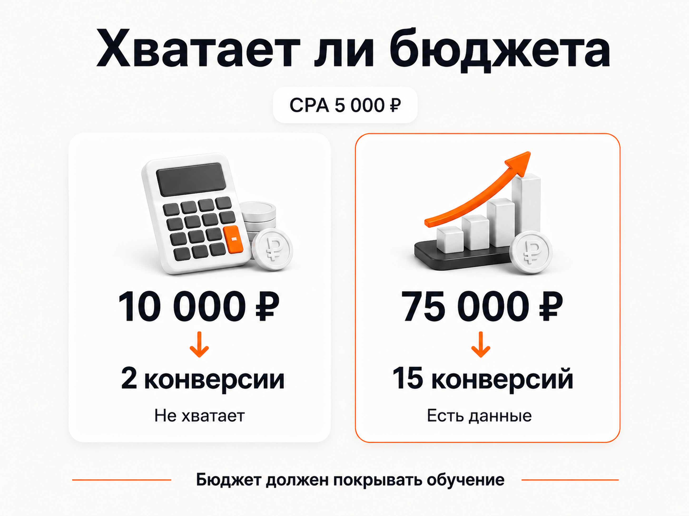
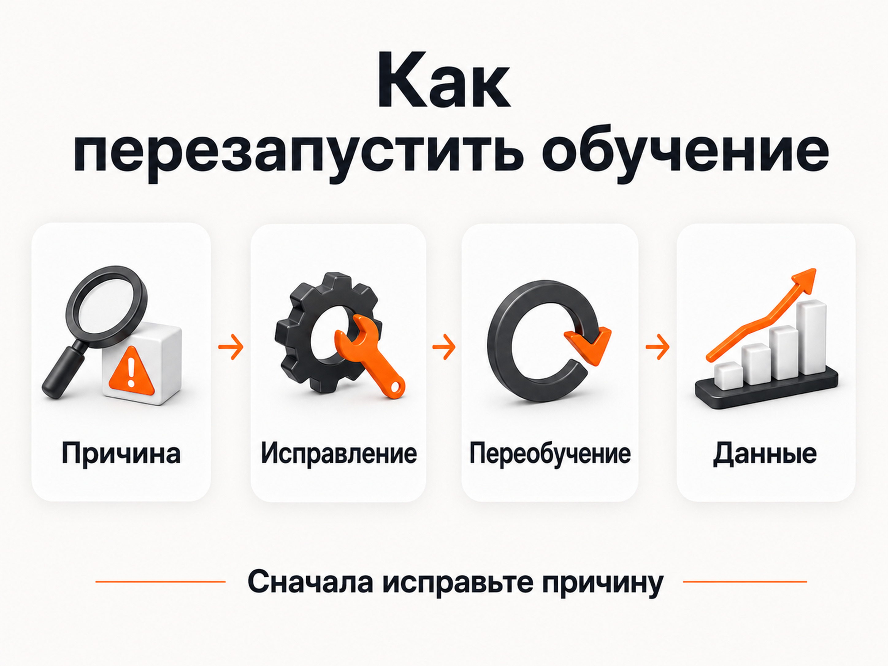

Блог о платном трафике
Обучение стратегии в Яндекс Директе
Автоматические стратегии Яндекс Директа обучаются на кликах и конверсиях. Если данных мало, бюджет не покрывает нужный объем или цель недостижима, кампания не сможет стабильно оптимизироваться.
Как работает обучение стратегии в Яндекс Директе
При стратегии «Максимум конверсий» Директ анализирует накопленную статистику и оценивает вероятность целевого действия для разных пользователей. Чем больше качественных конверсий получает кампания, тем больше у системы данных для прогноза.
Яндекс рекомендует дать стратегии минимум одну-две недели на обучение. В это время важно не менять постоянно цели, ограничения и другие существенные параметры - алгоритм должен работать в стабильных условиях.
Сколько конверсий нужно для обучения стратегии
Официальный минимальный ориентир - не менее 10 достижений выбранной цели в неделю. Практически стабильнее стратегия работает, когда кампания получает 15-20 и более качественных конверсий в неделю.
- 2-5 конверсий в неделю - данных обычно мало;
- около 10 - минимальный ориентир;
- 15-20 и более - более комфортный объем для обучения.
Важно получать события стабильно. Если в одну неделю пришло 20 заявок, затем три, а затем снова 15, алгоритму сложнее строить прогноз.
Конверсия в Яндекс Директе: что это и как ее считать

Недельного бюджета должно хватать на обучение
Бюджет должен позволять получать необходимый объем конверсий. Например, при CPA 5 000 рублей бюджет 10 000 рублей даст около двух конверсий в неделю - для обучения этого недостаточно. Для 15 конверсий при той же цене ориентир составит 75 000 рублей в неделю.
Это не обещание, что Директ потратит всю сумму или принесет ровно 15 заявок. Расчет нужен, чтобы понять, хватает ли кампании бюджета для получения данных.
CPA в Яндекс Директе: что это и как считать стоимость конверсии

Почему нельзя сильно занижать цену конверсии
Целевая цена конверсии должна опираться на фактические результаты кампании и экономику бизнеса. Если реальный CPA составляет около 1 500 рублей, а в настройках указано 100 рублей, алгоритм получает слишком жесткое ограничение. Результатом может стать сокращение трафика и количества заявок, а не дешевые конверсии.
Что означает «обучение стратегии остановлено»
Кампания может работать, но получать слишком мало данных для нормальной оптимизации. Причинами бывают недостаток конверсий, маленький бюджет, недостижимая целевая цена, неверная цель или сильно ограниченный охват.
Если статус появился после длительной работы, сначала проверьте, что изменилось в кампании: цели Метрики, бюджет, CPA, охват, остановки рекламы и фактическое число целевых действий.
Как перезапустить обучение стратегии
Сначала исправьте причину проблемы. Просто перезапустить ту же нерабочую конфигурацию обычно бесполезно. Полное переобучение может начаться при смене стратегии, значения ограничения расхода, целевых действий, модели оплаты, места показа или после возобновления кампании, остановленной более чем на семь дней.
Существенные изменения бюджета, регионов или отдельных целей также могут потребовать адаптации стратегии к новым данным. Не используйте изменение настроек как способ постоянно «сбрасывать» кампанию.

Нужно ли создавать новую кампанию, если старая не обучилась
Иногда это имеет смысл, если исходная кампания была запущена с неверной целью, неадекватным бюджетом и множеством ограничений. Но новая кампания не исправляет причину автоматически. Сначала проверьте цепочку: цель - количество конверсий - CPA - бюджет - охват - настройки стратегии.
Что делать, если 10-15 конверсий получить невозможно
В узких B2B-нишах, дорогих услугах и проектах с небольшим спросом можно выбрать более частую цель выше по воронке, если она связана с реальным интересом к продукту. Другой вариант - пакетная стратегия, которая объединяет несколько кампаний под общим алгоритмом. Для качества данных также полезна передача офлайн-конверсий: квалифицированных лидов, сделок и других событий из CRM.
Аудит Яндекс Директ: что проверить и как найти проблемы в рекламе
Итог
Для нормального обучения нужны корректная цель, минимум около 10 конверсий в неделю, лучше 15-20, реалистичный CPA, соответствующий ему бюджет и минимум резких изменений. Если стратегия не обучилась, сначала найдите и исправьте причину, а уже потом перезапускайте ее.